
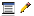

Onglet Paramètres (S)
Valeurs par défaut pour les nouveaux documents, le format de page et la langue de la boîte à outils.
Gérer les paramètres par défaut
| Bouton | Nom | Que fait-il ? |
|---|---|---|
| Charger les paramètres par défaut | Relit les paramètres par défaut enregistrés. | |
| Enregistrer les paramètres par défaut | Enregistre les valeurs actuelles de cet onglet comme valeurs par défaut. | |
| Paramètres d'usine | Remet toutes les valeurs aux paramètres d'usine d'origine. | |
| Appliquer au document | Applique les valeurs par défaut au document actuellement ouvert. |
Attention : modifier une valeur dans cet onglet ne change pas encore votre tableau actuel.
Cliquez sur Appliquer pour l'utiliser sur le document actuel, ou sur Enregistrer pour la garder pour plus tard.
Valeurs par défaut
| Paramètre | Signification |
|---|---|
| Largeur de colonne par défaut | Largeur des nouvelles colonnes. |
| Hauteur de ligne par défaut | Hauteur des nouvelles lignes. |
| Épaisseur des lignes de grille | Épaisseur des lignes entre les cellules. |
| Couleur de grille par défaut | Couleur de ces lignes. |
| Couleur de fond HTML | Couleur de fond de la page (le body du document HTML). |
| Afficher la grille de mise en page | Affiche une grille de points sur la page pour aider au placement. |
| Afficher les règles de page | Affiche les règles en mm au-dessus et à gauche de la page. |
| Afficher les en-têtes | Affiche les en-têtes de lignes et de colonnes (1, 2, 3… et A, B, C…) autour du tableau. |
Format de page
Le bouton du format de page ouvre un menu : A3, A4, A5 ou Letter, chaque fois en portrait ou en paysage. Le bouton affiche le format choisi ; la largeur et la hauteur en pixels sont indiquées à côté.
Langue
| Bouton | Nom | Que fait-il ? |
|---|---|---|
 | Langue d'affichage | Bouton drapeau : cliquez pour choisir néerlandais, anglais, français ou allemand dans un menu. Le bouton affiche le drapeau de la langue actuelle ; les info-bulles et les textes de la fenêtre changent immédiatement. |
 | Modifier les traductions | Ouvre l'éditeur de langues. Vous y adaptez les traductions et les enregistrez dans talen.lng. |
Éditeur de langues : la première colonne (Key) est la clé de recherche du code source et ne peut pas être modifiée.
Modifiez uniquement les colonnes NL, EN, FR et DU.